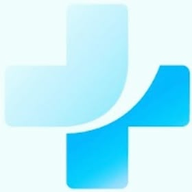
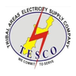
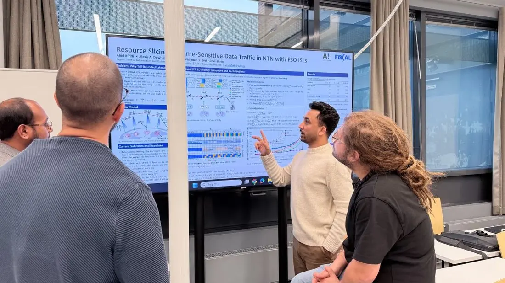
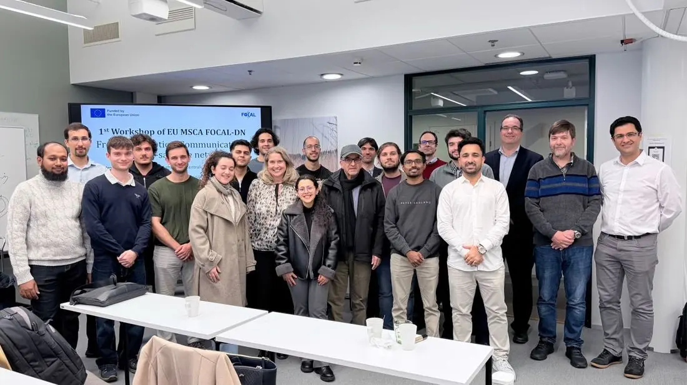
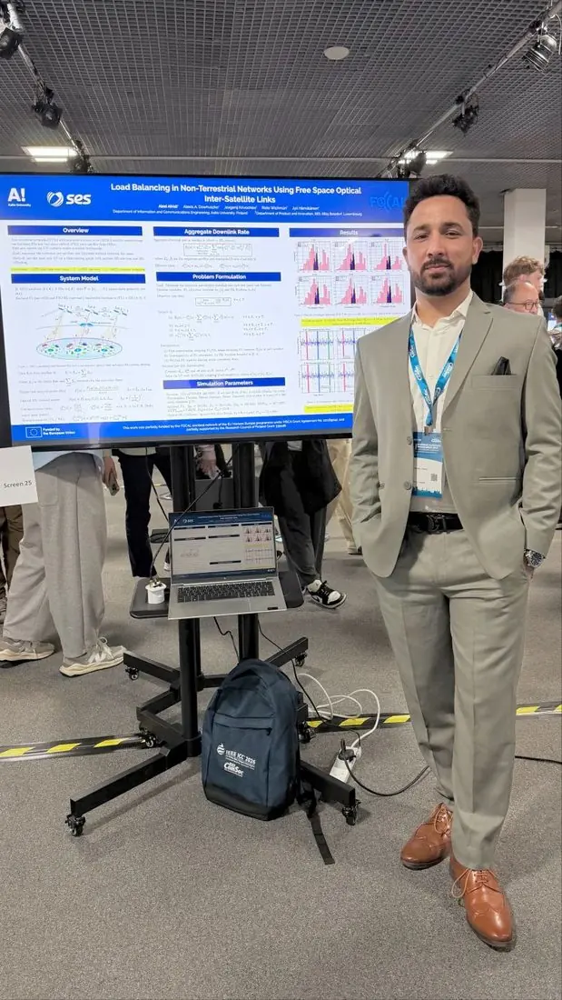
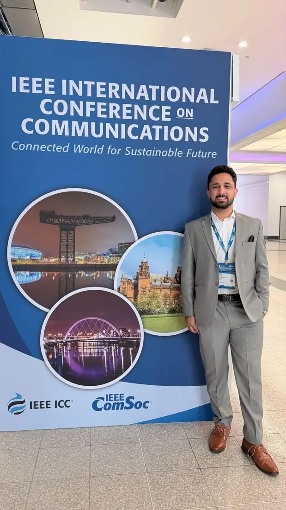
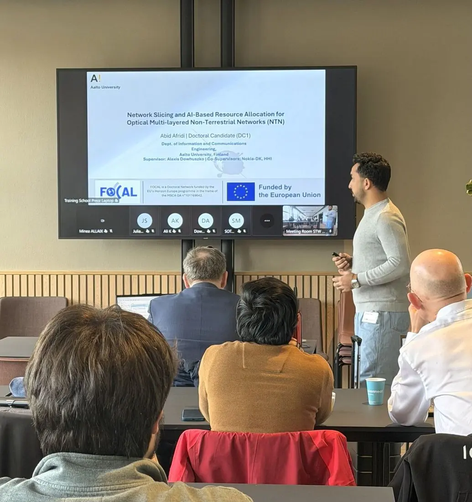
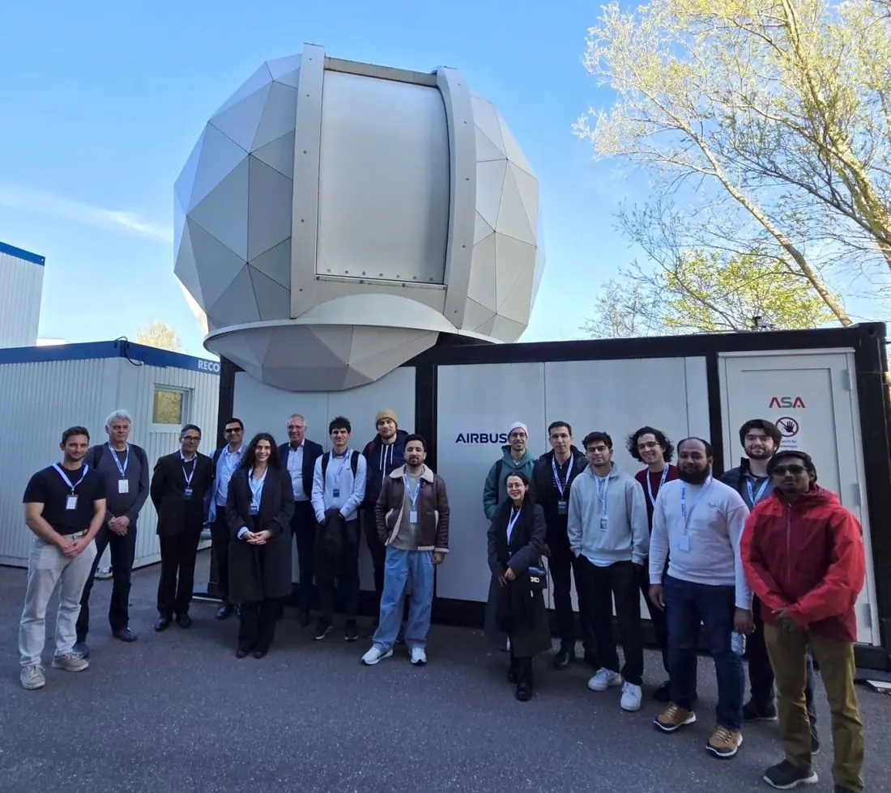
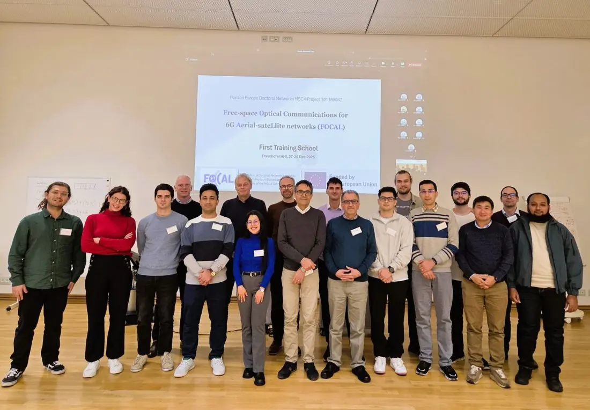
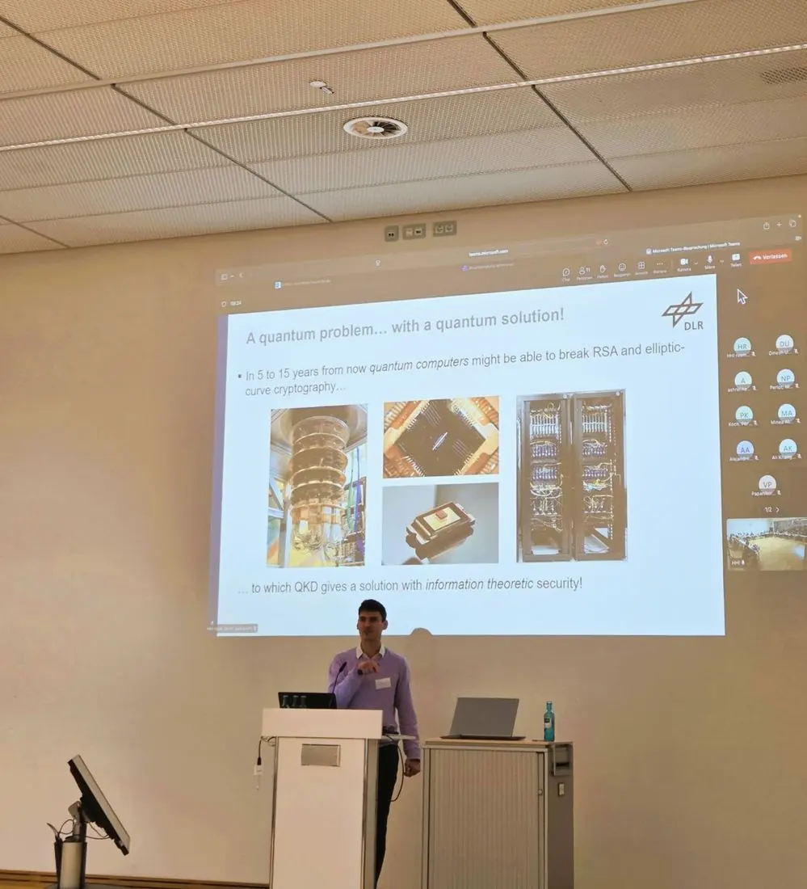

Multi-layer Non-Terrestrial Networks
AI-based resource allocation, network slicing and interference analysis across LEO, MEO and GEO layers for 6G access.
I am a doctoral researcher at Aalto University, in the Wireless Signal Processing research group at the Department of Information and Communications Engineering, as part of the FOCAL Marie Skłodowska-Curie Doctoral Network. My research focuses on 6G Non-Terrestrial Networks (NTNs), spanning AI-based resource allocation, network slicing, load balancing via free-space optical inter-satellite links, and interference analysis in multi-layer optical LEO constellations.
Previously, I was a Graduate Research Assistant at the Multimedia Communication and Systems Lab (MCSL), University of Ulsan, South Korea, where I developed metaheuristic optimization frameworks for wireless-powered IoT networks, IRS-assisted systems, and physical layer security.
AI-based resource allocation, network slicing and interference analysis across LEO, MEO and GEO layers for 6G access.
Free-space optical links between satellites that carry high-rate traffic across the constellation for routing, backhaul and relaying to ground gateways.
Energy harvesting, IRS-assisted links and physical layer security, optimized with PSO and genetic algorithm.
NTN architecture design for free-space optical data links and quantum key distribution (QKD), within FOCAL work.
Recent papers and events
Aalto University, Espoo, Finland
2025 – present
University of Ulsan, Ulsan, South Korea
2022 – 2025
University of Science & Technology Bannu, Bannu, Pakistan
2016 – 2020
Espoo, Finland
2025 – present
Wireless Signal Processing Group, Department of Information and Communications Engineering
Responsibilities: Research on NTN load balancing via FSO inter-satellite links, network slicing, and interference analysis in narrow-beam LEO satellite constellations.
Ulsan, South Korea
2022 – 2025
Multimedia Communication and Systems Lab (MCSL)
Responsibilities: Developed metaheuristic optimization frameworks (Quantum PSO, genetic algorithms) for throughput maximization and joint resource allocation in IRS-assisted, secured wireless-powered IoT networks, with a focus on physical layer security.

Peshawar, Pakistan
Jan – Dec 2021
Responsibilities: Troubleshooting and installation of medical machines and equipment; preventive maintenance and field modifications.
Peshawar, Pakistan
Jul – Aug 2019
Responsibilities: Optical fiber-based systems and their operation; switching systems.
Peshawar, Pakistan
Aug – Sep 2018
Responsibilities: Video distribution amplifiers (VDAs); satellite signal downlinking and integrated receiver decoders (IRDs).

Peshawar, Pakistan
May – Jul 2018
Responsibilities: Protection of power transformers and other grid equipment; electrical acceptance testing, including continuity and high-potential isolation tests.
Featured paper New
Time-frequency resource blocks are reserved on every inter-satellite link of a flow's route and aligned hop by hop for pipelined forwarding. At high load and a high reliability target, the scheme needs about 31 ms, 2.5 to 6.8 times less than FIFO, FSF and pure TDMA.
No publication matches these filters.
IEEE AccessIEEE Access, vol. 14, pp. 165592–165603, 2026
IEEE OJ-COMSIEEE Open Journal of the Communications Society, vol. 7, pp. 3439–3450, 2026
Enhancing Physical Layer Security in WPCNs With IRS and Controlled Jamming for 6G IoT Applications
IEEE AccessIEEE Access, vol. 13, pp. 4670–4682, 2025
Quantum PSO-Based Optimization of Secured IRS-Assisted Wireless-Powered IoT Networks
Appl. Sci.Applied Sciences (MDPI), vol. 14, no. 24, p. 11677, 2024
IEEE AccessIEEE Access, vol. 12, pp. 65241–65253, 2024
An Efficient and Improved Model for Power Theft Detection in Pakistan
BEEIBulletin of Electrical Engineering and Informatics, vol. 10, no. 4, pp. 1828–1837, 2021
Resource Slicing for Time-Sensitive Data Traffic in Non-Terrestrial Networks with FSO ISLs
GC 2026 WSIEEE Global Communications Conference (GLOBECOM) Workshops, Macau, China, 2026 (accepted)
Load Balancing in Non-Terrestrial Networks Using Free Space Optical Inter-satellite Links
ICC 2026IEEE International Conference on Communications (ICC), Glasgow, United Kingdom, pp. 1–6, 2026
Integrated Sensing and Communication (ISAC) in Secured Wireless Powered IoT Networks
KICS 2024Symposium of the Korean Institute of Communications and Information Sciences (KICS), Jeju, Korea, 2024
Enhancing Sum Throughput in Wireless Powered IoT Networks Using TDMA-Based Resource Allocation
ICMT 202326th International Conference on Mechatronics Technology (ICMT), Busan, South Korea, pp. 1–5, 2023
Optimization of Resources Allocation and Security in Wireless Powered IoT Networks
M.Sc.University of Ulsan, Ulsan, South Korea, 2025
Aalto University · Espoo, Finland
Oct 2026
Two-day workshop of the FOCAL Doctoral Network, hosted by Aalto University on 15–16 October 2026. I presented a poster on resource slicing for time-sensitive traffic in NTNs with FSO inter-satellite links. The programme combined poster sessions with peer review among the doctoral candidates, invited talks from McMaster University (Canada) and NICT (Japan), and group activities across work packages.


Glasgow, United Kingdom
24–28 May 2026
Presented our paper "Load Balancing in Non-Terrestrial Networks Using Free Space Optical Inter-satellite Links" with A. A. Dowhuszko, J. Krivochiza, R. Wichman and J. Hämäläinen. The paper treats load balancing across the satellite constellation as an anycast multi-commodity flow problem and is published in IEEE Xplore.


TNO, Delft & Airbus, Leiden · The Netherlands
Apr 2026
Presented my doctoral research at the network mid-term review. Technical sessions covered optical pointing, acquisition & tracking, coherent long-range optical communication, spatial-mode-multiplexed FSO, QKD space links, and AI/ML for satellite communication networks, with hands-on visits to the optical-communications labs at TNO and Airbus.


Fraunhofer HHI · Berlin, Germany
Oct 2025
Three-day MSCA training school on free-space optical (FSO) communication, satellite-based quantum key distribution (QKD), satellite constellation design, and NTN standardization in 3GPP, including visits to HHI's QKD and optical-communications laboratories.


Photos: FOCAL Project
European Commission
Competitive EU doctoral fellowship for early-stage researchers, awarded for excellence in research and training. Part of the FOCAL Doctoral Network on future open communication architectures for 6G.
National Research Foundation of Korea
Prestigious government-funded fellowship supporting outstanding graduate students in Korean universities, awarded for M.Sc. research at the University of Ulsan.
Higher Education Commission of Pakistan
Merit-based undergraduate scholarship awarded under the HEC project "Provision of Higher Education Opportunities for Students of Balochistan & FATA," a flagship national programme supporting talented students from underprivileged regions throughout the B.E. (Telecommunication) degree.
Additional Achievements
MATLAB
Numerical computing and simulation
Python
Scripting, data analysis and ML
LaTeX
Papers, reports and slides
CVX
Convex optimization modelling
Simulink
System-level modelling
Proteus
Circuit design and simulation
Non-Terrestrial Network (Satellite) and 5G: Overview, Architecture, Multi-Connectivity
LinkedIn Learning, 2026
Mastering Tech Standardisation — The Basics
ETSI, 2026
5G and Beyond Technologies
Universitat Politècnica de València, Spain
Wireless Communication for Everybody
Yonsei University, South Korea
Wireless Networking — one-month training
NETHOME, Peshawar
Introduction to Data Science
Cisco Networking Academy
Deep Learning for Beginners
SkillUp
Research Ethics Education
University of Ulsan, South Korea
Six Webinars
Pakistan Engineering Council (PEC)
English
IELTS Overall 7.0 (July 2024)Korean
BasicUrdu
National languagePashto
Mother tongueI am always happy to discuss research collaborations, questions about 6G NTN or wireless communications, or potential opportunities. Feel free to reach out by email.
Office
Otaniemi campus · Kide building
Kide, Konemiehentie 1
Otaniemi campus, Aalto University
02150 Espoo, Finland